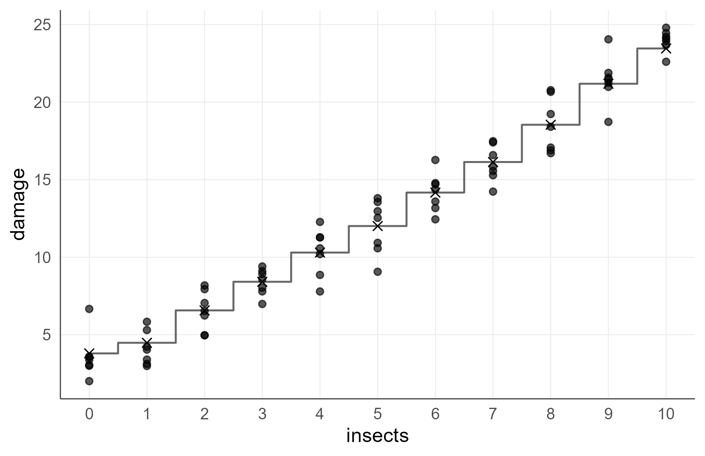
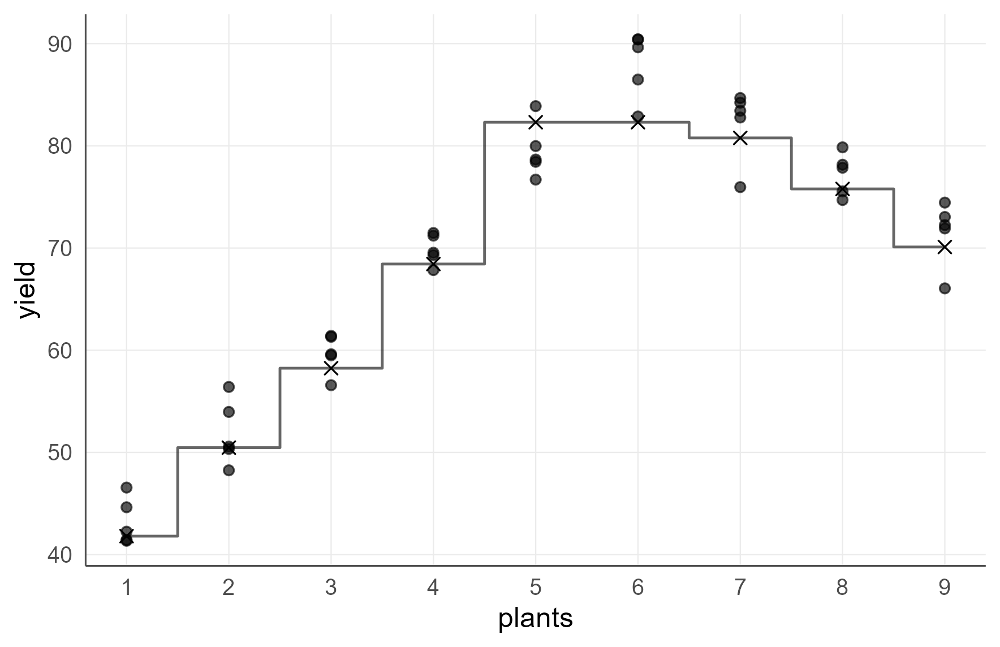
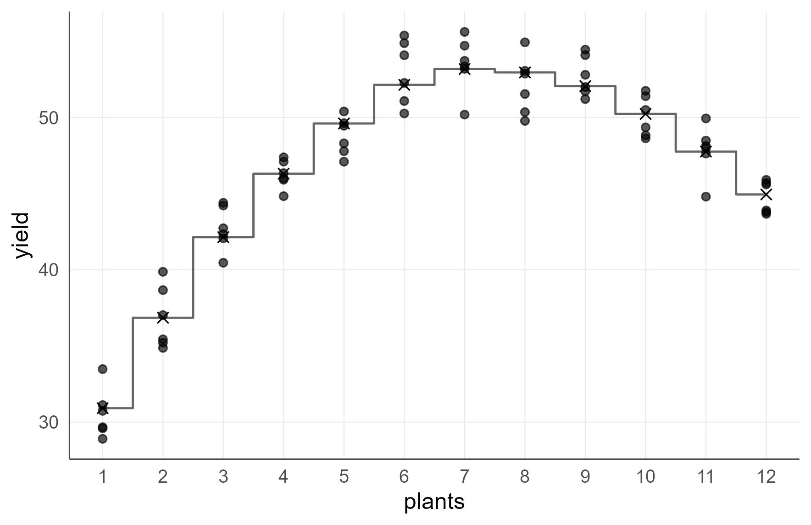
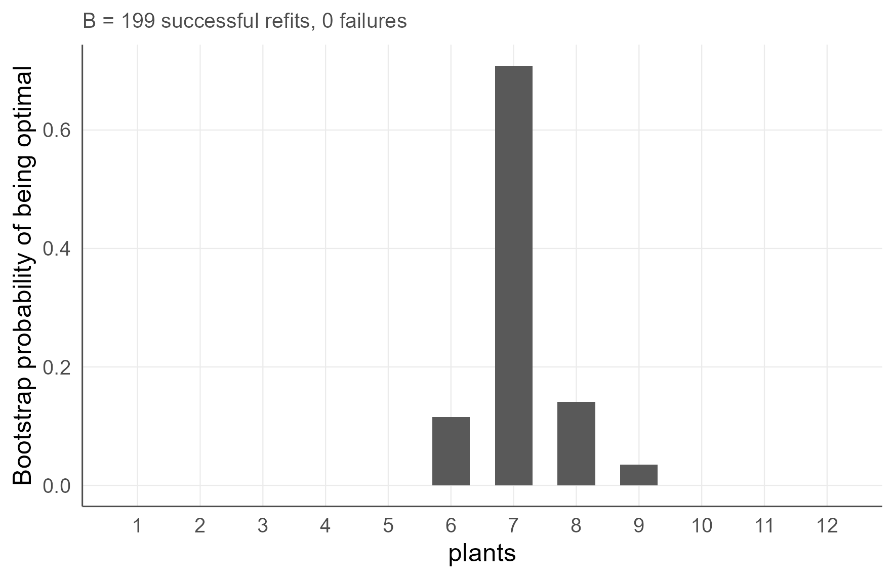
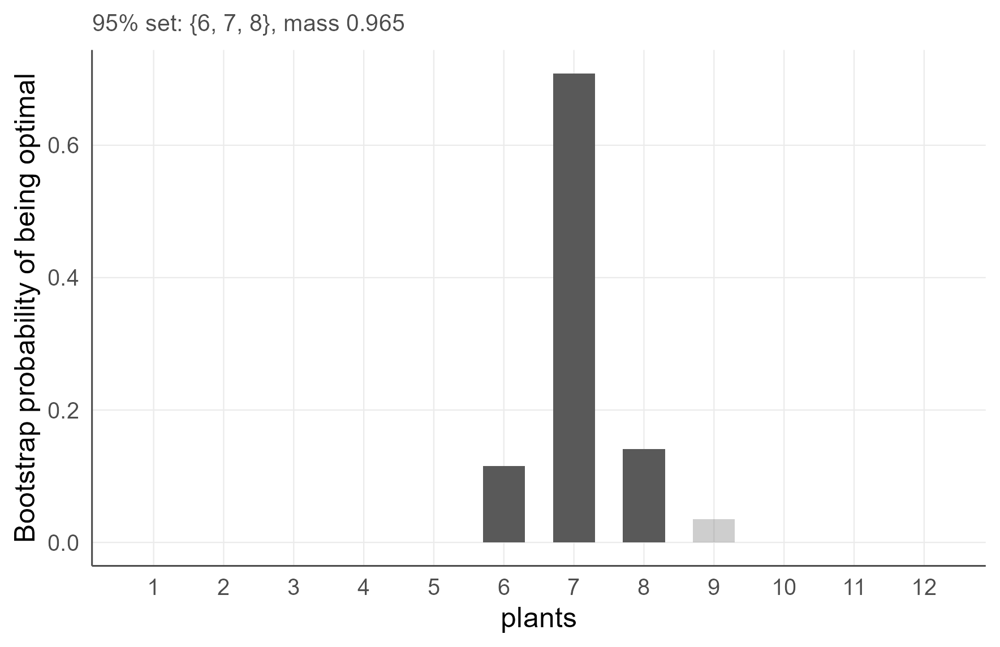
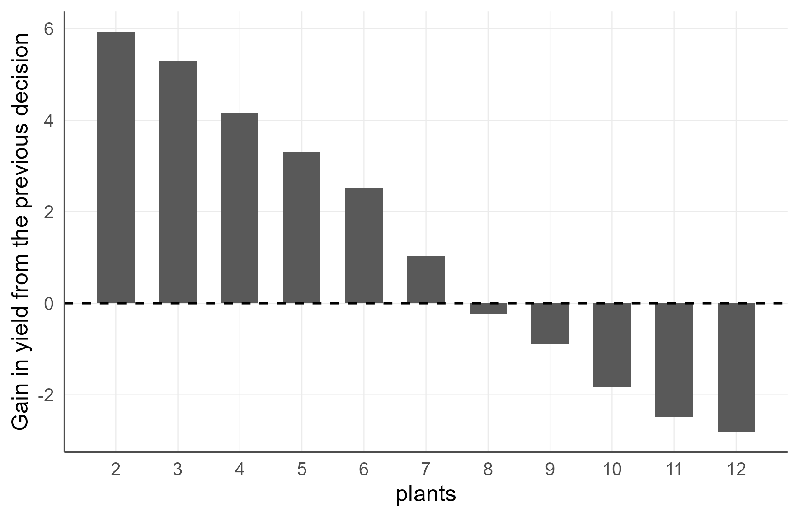
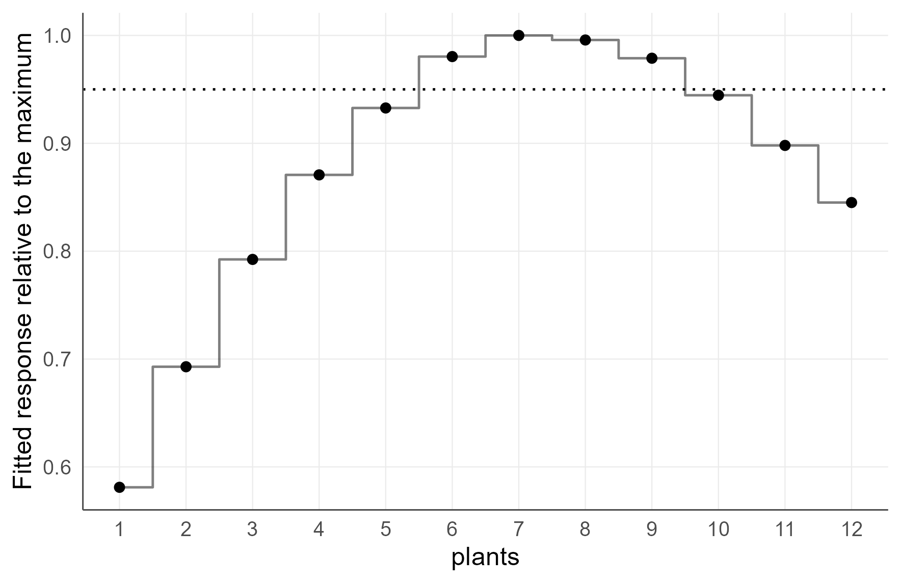

Integer-Support Nonparametric Regression for Agronomy
agriRank Development Team
Source:vignettes/v07-integer-support-regression.Rmd
v07-integer-support-regression.RmdInteger decision vignette Package:
agriRank Version targeted:
0.14.0 Owns: treatments whose admissible
values are whole numbers, and the decision support that follows from
that fact.
1. Why this vignette exists
A grower cannot plant 7.4 plants per hill, apply 2.6 sprays, install 3.7 irrigation events, or set 11.3 traps per hectare. The admissible values are whole numbers, and there is nothing between them.
The habitual analysis fits a continuous curve, locates its maximum at 7.4, and recommends 7. That is wrong at the level of the estimand, not the presentation: the rounded value is the neighbour of an inadmissible one, and it need not be the best admissible decision.
# A response evaluated only where a decision can actually be taken.
x <- 1:12
fx <- c(24, 31, 37, 41.6, 44.8, 46.6, 47.0, 46.0, 43.6, 39.8, 34.6, 28)
data.frame(plants = x, fitted = fx)[6:8, ]
#> plants fitted
#> 6 6 46.6
#> 7 7 47.0
#> 8 8 46.0The continuous maximum of a curve through those points sits near 6.8. Rounding gives 7, and here 7 happens to be right. But nothing guaranteed it: with a slightly asymmetric response the continuous maximum can sit at 6.8 while the best admissible value is 6, and rounding then recommends the wrong density.
Evaluate the response on the admissible support. Do not optimise a continuous curve and round afterwards.
1.1 What follows from taking this seriously
Once the support is discrete, three familiar objects change:
| Object | Continuous | Integer support |
|---|---|---|
| the optimum | a point on a line | the best of a finite set |
| its uncertainty | an interval | a probability mass over decisions |
| the rate of change | a derivative | a finite difference |
The third is the one most often overlooked. A derivative is not an admissible quantity on a discrete support, and the package refuses to compute one.
2. Learning objectives
After working through this vignette, the reader should be able to:
- recognise an agronomic treatment whose support is integer;
- explain why rounding a continuous optimum is an error of estimand;
- declare an integer support, and choose among the three declaration modes;
- choose among the four integer engines on structural grounds;
- read a first and second finite difference agronomically;
- compute response per unit of input and say when it is the right criterion;
- apply the three threshold rules and match each to a decision context;
- read a bootstrap probability mass over decisions, rather than an interval;
- build and interpret a discrete confidence set;
- explain why the package refuses fractional predictions and derivatives;
- distinguish interpolation from extrapolation on a sparse integer support.
3. The integer module in one map
| Function | Answers |
|---|---|
agri_np_regression(predictor_support =) |
fit, restricted to admissible values |
agri_integer_predict() |
the response at every admissible decision |
agri_integer_optimum() |
the best admissible decision |
agri_integer_difference() |
what one more unit gains |
agri_integer_efficiency() |
response per unit of input |
agri_integer_threshold() |
the smallest decision meeting a stated rule |
agri_integer_bootstrap() |
probability mass over decisions |
agri_integer_confset() |
a discrete confidence set |
3.1 The four engines
data.frame(
engine = c("discrete_kernel", "unimodal_isotonic", "umbrella", "integer_grid"),
fits = c("ordered-discrete kernel regression",
"a single increase-then-decrease response",
"constrained umbrella order with covariate adjustment",
"a flexible latent curve projected onto the lattice"),
keeps_block = c("no", "no", "yes", "via the base engine"),
use_when = c("no shape assumption, moderate replication",
"one peak is known, no block",
"one peak is known, blocked design",
"no shape assumption, and a familiar smoother is wanted")
)
#> engine fits
#> 1 discrete_kernel ordered-discrete kernel regression
#> 2 unimodal_isotonic a single increase-then-decrease response
#> 3 umbrella constrained umbrella order with covariate adjustment
#> 4 integer_grid a flexible latent curve projected onto the lattice
#> keeps_block use_when
#> 1 no no shape assumption, moderate replication
#> 2 no one peak is known, no block
#> 3 yes one peak is known, blocked design
#> 4 via the base engine no shape assumption, and a familiar smoother is wanted3.2 The three declaration modes
data.frame(
predictor_support = c("observed_integer", "integer_range", "custom_integer"),
admits = c("only the integers actually tested",
"every integer between declared bounds",
"an explicit set supplied by the analyst"),
interpolates = c("no", "yes", "as declared"),
use_when = c("untested densities are not recommendable",
"the gap between tested values is agronomically meaningless",
"only certain values are operationally possible")
)
#> predictor_support admits interpolates
#> 1 observed_integer only the integers actually tested no
#> 2 integer_range every integer between declared bounds yes
#> 3 custom_integer an explicit set supplied by the analyst as declared
#> use_when
#> 1 untested densities are not recommendable
#> 2 the gap between tested values is agronomically meaningless
#> 3 only certain values are operationally possibleThe distinction between the first two is scientific. If the trial tested 1, 3, 5, 7 and 9 plants, is 4 a recommendation the experiment supports? Sometimes yes, because nothing physical happens between 3 and 5. Sometimes no, because the seeder cannot be set to 4. The declaration records which.
4. Ordered-discrete kernel regression
if (requireNamespace("np", quietly = TRUE)) {
set.seed(4101)
insects <- data.frame(insects = rep(0:10, each = 7))
insects$damage <- 3.5 + 1.25 * insects$insects +
0.08 * insects$insects^2 +
rnorm(nrow(insects), 0, 1.4)
fit_dk <- agri_np_regression(
damage ~ insects,
data = insects,
method = "discrete_kernel",
predictor_support = "observed_integer",
integer_kernel = "wangvanryzin"
)
print(fit_dk)
print(agri_integer_predict(fit_dk))
}
#> agriRank nonparametric regression
#> Method: discrete_kernel
#> Response: damage
#> Predictors: insects
#> Integer decision support: {0, 1, 2, 3, 4, 5, 6, 7, 8, 9, 10}
#> insects fit
#> 1 0 3.797471
#> 2 1 4.481492
#> 3 2 6.570209
#> 4 3 8.415331
#> 5 4 10.298692
#> 6 5 12.008971
#> 7 6 14.167077
#> 8 7 16.136009
#> 9 8 18.538217
#> 10 9 21.182339
#> 11 10 23.456741
if (exists("fit_dk")) print(agri_np_plot(fit_dk))
An integer-support fit drawn as steps and crosses, not a continuous line. There is nothing between two admissible decisions, and the figure says so.
4.1 Why the figure is drawn this way
A continuous line through integer values suggests that a value exists between them. Where the support is genuinely discrete, that suggestion is false, and it is the visual form of the rounding error this vignette exists to prevent.
4.2 Fractional predictions are refused
if (exists("fit_dk")) {
agri_np_predict(fit_dk, data.frame(insects = 4.5))
}
#> Error:
#> ! Predictions for an integer-support fit are restricted to integer predictor values.Once integer support has been declared, a prediction at 4.5 insects describes an observation that cannot occur. The refusal is not pedantry: a fitted value there would flow into an optimum, a threshold and eventually a recommendation.
5. Unimodal isotonic regression
if (requireNamespace("Iso", quietly = TRUE)) {
set.seed(4102)
density <- data.frame(plants = rep(1:10, each = 6))
density$yield <- 28 +
8.5 * pmin(density$plants, 6) -
5.2 * pmax(density$plants - 6, 0) +
rnorm(nrow(density), 0, 2)
fit_ui <- agri_np_regression(
yield ~ plants,
data = density,
method = "unimodal_isotonic",
predictor_support = "observed_integer"
)
print(fit_ui)
print(agri_integer_predict(fit_ui))
print(agri_integer_optimum(fit_ui))
}
#> agriRank nonparametric regression
#> Method: unimodal_isotonic
#> Response: yield
#> Predictors: plants
#> Integer decision support: {1, 2, 3, 4, 5, 6, 7, 8, 9, 10}
#> plants fit
#> 1 1 35.45820
#> 2 2 45.20876
#> 3 3 53.27378
#> 4 4 60.83307
#> 5 5 71.12575
#> 6 6 78.38383
#> 7 7 72.97901
#> 8 8 67.72523
#> 9 9 61.51549
#> 10 10 58.63541
#> agriRank integer-support optimum
#> Objective: max
#> Admissible support: {1, 2, 3, 4, 5, 6, 7, 8, 9, 10}
#> Optimal integer value(s): 6
#> Fitted response: 78.38385.1 What the constraint buys
A plant-density response rises to a peak and then falls: too few plants waste land, too many compete. That shape is known from the agronomy, not discovered from the data.
Imposing it means the estimate cannot show a spurious second peak produced by noise, and it means the optimum is well defined by construction. The information comes from the biology, and the data are spent on locating the peak rather than on establishing that there is one.
5.2 When not to impose it
If the response might be monotone over the tested range, because the trial did not reach the density at which competition begins, a unimodal constraint forces a peak that may lie outside the data. The fitted optimum is then at the boundary and means nothing.
Check with an unconstrained engine before imposing the constraint.
6. Umbrella regression with a block
if (requireNamespace("cgam", quietly = TRUE)) {
set.seed(4103)
rcbd <- expand.grid(block = factor(1:5), plants = 1:9)
rcbd$yield <- 32 +
9 * pmin(rcbd$plants, 6) -
5.5 * pmax(rcbd$plants - 6, 0) +
as.numeric(rcbd$block) * 0.7 +
rnorm(nrow(rcbd), 0, 1.8)
fit_umb <- agri_np_regression(
yield ~ plants,
data = rcbd,
method = "umbrella",
block = block,
predictor_support = "observed_integer"
)
print(fit_umb)
print(agri_integer_optimum(fit_umb))
}
#> agriRank nonparametric regression
#> Method: umbrella
#> Response: yield
#> Predictors: plants
#> Block adjustment: block
#> Integer decision support: {1, 2, 3, 4, 5, 6, 7, 8, 9}
#> agriRank integer-support optimum
#> Objective: max
#> Admissible support: {1, 2, 3, 4, 5, 6, 7, 8, 9}
#> Optimal integer value(s): 5, 6
#> Fitted response: 82.3101
if (exists("fit_umb")) print(agri_np_plot(fit_umb))
Block-adjusted umbrella fit on an integer support.
Umbrella regression is the engine to reach for when the response has one peak and the design was blocked. It is the only one of the four that carries a block directly.
7. Integer grid projection
set.seed(4104)
ig <- data.frame(plants = rep(1:12, each = 6))
ig$yield <- 24 + 7.5 * ig$plants -
0.48 * ig$plants^2 +
rnorm(nrow(ig), 0, 1.4)
fit_ig <- agri_np_regression(
yield ~ plants,
data = ig,
method = "integer_grid",
integer_base_method = "smoothing_spline",
predictor_support = "integer_range",
integer_range = c(1, 12)
)
agri_integer_predict(fit_ig)
#> plants fit
#> 1 1 30.90778
#> 2 2 36.85183
#> 3 3 42.14422
#> 4 4 46.31241
#> 5 5 49.61108
#> 6 6 52.14585
#> 7 7 53.18841
#> 8 8 52.96377
#> 9 9 52.06425
#> 10 10 50.23838
#> 11 11 47.76455
#> 12 12 44.94822
agri_integer_optimum(fit_ig)
#> agriRank integer-support optimum
#> Objective: max
#> Admissible support: {1, 2, 3, 4, 5, 6, 7, 8, 9, 10, 11, 12}
#> Optimal integer value(s): 7
#> Fitted response: 53.1884
agri_np_plot(fit_ig)
A flexible latent curve, evaluated only at admissible densities.
7.1 What projection means
A familiar smoother is fitted to the data, and every public prediction, optimum and decision is then evaluated on the admissible lattice. The latent curve is a computational device; nothing is ever reported off the lattice.
That is a different operation from fitting a curve and rounding the answer. The optimum is the best value among the admissible ones, found by evaluation, not the nearest integer to a continuous argmax.
8. Finite differences replace the derivative
agri_integer_difference(fit_ig, order = 1)
#> from to delta_x fit_from fit_to difference difference_per_integer
#> 1 1 2 1 30.90778 36.85183 5.9440532 5.9440532
#> 2 2 3 1 36.85183 42.14422 5.2923896 5.2923896
#> 3 3 4 1 42.14422 46.31241 4.1681861 4.1681861
#> 4 4 5 1 46.31241 49.61108 3.2986689 3.2986689
#> 5 5 6 1 49.61108 52.14585 2.5347670 2.5347670
#> 6 6 7 1 52.14585 53.18841 1.0425695 1.0425695
#> 7 7 8 1 53.18841 52.96377 -0.2246485 -0.2246485
#> 8 8 9 1 52.96377 52.06425 -0.8995171 -0.8995171
#> 9 9 10 1 52.06425 50.23838 -1.8258726 -1.8258726
#> 10 10 11 1 50.23838 47.76455 -2.4738254 -2.4738254
#> 11 11 12 1 47.76455 44.94822 -2.8163352 -2.81633528.1 The first difference is the agronomic quantity
On a discrete support the derivative is not admissible. What replaces it is the difference between adjacent decisions: what is gained by planting one more.
That is also the quantity an economic threshold applies to. If one more plant per hill gains 1.2 units of yield and costs 0.9 units of seed and handling, the decision is arithmetic.
agri_integer_difference(fit_ig, order = 2)
#> center fit_left fit_center fit_right second_difference
#> 1 2 30.90778 36.85183 42.14422 -0.6516635
#> 2 3 36.85183 42.14422 46.31241 -1.1242035
#> 3 4 42.14422 46.31241 49.61108 -0.8695172
#> 4 5 46.31241 49.61108 52.14585 -0.7639019
#> 5 6 49.61108 52.14585 53.18841 -1.4921975
#> 6 7 52.14585 53.18841 52.96377 -1.2672179
#> 7 8 53.18841 52.96377 52.06425 -0.6748686
#> 8 9 52.96377 52.06425 50.23838 -0.9263555
#> 9 10 52.06425 50.23838 47.76455 -0.6479528
#> 10 11 50.23838 47.76455 44.94822 -0.34250988.2 The second difference
The second difference measures whether the gains are shrinking. A response with diminishing returns has negative second differences throughout, and the point where the first difference crosses zero is the optimum.
8.3 The derivative is refused
agri_np_derivative(fit_ig)
#> Warning: An instantaneous derivative is not an admissible decision quantity for
#> an integer-support fit. Returning first finite differences instead.
#> from to delta_x fit_from fit_to difference difference_per_integer
#> 1 1 2 1 30.90778 36.85183 5.9440532 5.9440532
#> 2 2 3 1 36.85183 42.14422 5.2923896 5.2923896
#> 3 3 4 1 42.14422 46.31241 4.1681861 4.1681861
#> 4 4 5 1 46.31241 49.61108 3.2986689 3.2986689
#> 5 5 6 1 49.61108 52.14585 2.5347670 2.5347670
#> 6 6 7 1 52.14585 53.18841 1.0425695 1.0425695
#> 7 7 8 1 53.18841 52.96377 -0.2246485 -0.2246485
#> 8 8 9 1 52.96377 52.06425 -0.8995171 -0.8995171
#> 9 9 10 1 52.06425 50.23838 -1.8258726 -1.8258726
#> 10 10 11 1 50.23838 47.76455 -2.4738254 -2.4738254
#> 11 11 12 1 47.76455 44.94822 -2.8163352 -2.8163352
agri_np_sizer(fit_ig)
#> Error:
#> ! SiZer describes the derivative of a continuous gradient. For an integer decision support use agri_integer_difference(), which reports finite differences between admissible decisions.Both refusals name the alternative. A derivative describes the rate of change of a function defined on a continuum; there is no continuum here.
9. Efficiency: response per unit of input
eff <- agri_integer_efficiency(fit_ig)
eff
#> plants fitted_response relative_to_fitted_maximum
#> 1 1 30.90778 0.5810999
#> 2 2 36.85183 0.6928545
#> 3 3 42.14422 0.7923572
#> 4 4 46.31241 0.8707236
#> 5 5 49.61108 0.9327422
#> 6 6 52.14585 0.9803986
#> 7 7 53.18841 1.0000000
#> 8 8 52.96377 0.9957764
#> 9 9 52.06425 0.9788645
#> 10 10 50.23838 0.9445361
#> 11 11 47.76455 0.8980255
#> 12 12 44.94822 0.8450753
#> marginal_gain_from_previous gain_per_integer_from_previous
#> 1 NA NA
#> 2 5.9440532 5.9440532
#> 3 5.2923896 5.2923896
#> 4 4.1681861 4.1681861
#> 5 3.2986689 3.2986689
#> 6 2.5347670 2.5347670
#> 7 1.0425695 1.0425695
#> 8 -0.2246485 -0.2246485
#> 9 -0.8995171 -0.8995171
#> 10 -1.8258726 -1.8258726
#> 11 -2.4738254 -2.4738254
#> 12 -2.8163352 -2.8163352
#> marginal_gain_to_next gain_per_integer_to_next
#> 1 5.9440532 5.9440532
#> 2 5.2923896 5.2923896
#> 3 4.1681861 4.1681861
#> 4 3.2986689 3.2986689
#> 5 2.5347670 2.5347670
#> 6 1.0425695 1.0425695
#> 7 -0.2246485 -0.2246485
#> 8 -0.8995171 -0.8995171
#> 9 -1.8258726 -1.8258726
#> 10 -2.4738254 -2.4738254
#> 11 -2.8163352 -2.8163352
#> 12 NA NA9.1 A different question from the optimum
The optimum maximises the response. Efficiency maximises the response per unit of input, and the two rarely coincide.
e <- as.data.frame(eff)
names(e)
#> [1] "plants" "fitted_response"
#> [3] "relative_to_fitted_maximum" "marginal_gain_from_previous"
#> [5] "gain_per_integer_from_previous" "marginal_gain_to_next"
#> [7] "gain_per_integer_to_next"
ecol <- grep("efficien|ratio|per_unit", names(e), value = TRUE)[1]
xcol <- names(e)[1]
data.frame(
criterion = c("maximum response", "maximum response per unit of input"),
decision = c(agri_integer_optimum(fit_ig)$optimum,
if (!is.na(ecol)) e[[xcol]][which.max(e[[ecol]])] else NA)
)
#> criterion decision
#> 1 maximum response NA
#> 2 maximum response per unit of input NAThe efficiency optimum is almost always lower than the yield optimum, because the first units of input are the most productive. Which criterion applies depends on what is scarce.
| Scarce resource | Criterion |
|---|---|
| land | maximum response per unit area, the yield optimum |
| seed, water, fertilizer | maximum response per unit of that input |
| capital | maximum net return, which needs prices |
10. Threshold rules
Three rules are available, and each matches a different decision context.
10.1 A fraction of the maximum
agri_integer_threshold(
fit_ig,
criterion = "fraction_of_maximum",
value = 0.95
)
#> criterion target integer_value fitted_response threshold_response
#> 1 fraction_of_maximum 0.95 6 52.14585 50.52899The smallest decision reaching 95% of the maximum response. This is the rule for a grower who wants nearly all the benefit at a lower input, and it is often far below the optimum because the response is flat near its peak.
10.2 A gain over a baseline
agri_integer_threshold(
fit_ig,
criterion = "gain_from_baseline",
value = 15,
baseline = 1
)
#> criterion target baseline integer_value fitted_response
#> 1 gain_from_baseline 15 1 4 46.31241
#> achieved_gain
#> 1 15.40463The smallest decision achieving a stated absolute gain over a reference. This is the rule when the question is “is the change worth making at all”, with the baseline being current practice.
10.3 A marginal gain
agri_integer_threshold(
fit_ig,
criterion = "marginal_gain",
value = 1
)
#> criterion target integer_value marginal_gain_per_integer
#> 1 marginal_gain 1 8 -0.2246485The largest decision at which one more unit still gains at least the
stated amount. This is the economic rule: set value to the
input cost expressed in response units, and the answer is the
profit-maximising decision.
10.4 Choosing among them
data.frame(
rule = c("fraction_of_maximum", "gain_from_baseline", "marginal_gain"),
question = c("how little can I use and still get nearly all of it",
"is the change worth making at all",
"where does the next unit stop paying for itself"),
needs = c("a fraction", "a baseline and a gain", "a cost in response units")
)
#> rule question
#> 1 fraction_of_maximum how little can I use and still get nearly all of it
#> 2 gain_from_baseline is the change worth making at all
#> 3 marginal_gain where does the next unit stop paying for itself
#> needs
#> 1 a fraction
#> 2 a baseline and a gain
#> 3 a cost in response units11. Probability mass, not an interval
boot_opt <- agri_integer_bootstrap(
fit_ig,
B = 199,
seed = 4105
)
boot_opt
#> agriRank bootstrap distribution of the integer optimum
#> Objective: max
#> Successful refits: 199 / 199
#> plants probability
#> 1 0.00000000
#> 2 0.00000000
#> 3 0.00000000
#> 4 0.00000000
#> 5 0.00000000
#> 6 0.11557789
#> 7 0.70854271
#> 8 0.14070352
#> 9 0.03517588
#> 10 0.00000000
#> 11 0.00000000
#> 12 0.0000000011.1 Why a mass and not an interval
The optimum is a discrete quantity. Across resampled experiments it takes a handful of values, and the natural summary is how often each one was best.
A symmetric interval would be misleading in two ways: it can include values that were never optimal in any replicate, and it hides an asymmetric or bimodal distribution, which is common when two adjacent densities are nearly tied.
plot(boot_opt)
Probability mass over admissible decisions. The height of each bar is the share of resampled experiments in which that density was best.
11.2 Reading the mass
| Pattern | Reading |
|---|---|
| one tall bar | the decision is well determined |
| two adjacent bars of similar height | the two densities are practically tied; either is defensible |
| a wide flat spread | the experiment does not determine the decision |
| mass at an end of the range | the optimum may lie outside the tested densities |
The last row is the discrete counterpart of the boundary problem in the continuous case, and it carries the same warning: the experiment may not have tested far enough.
12. Discrete confidence sets
agri_integer_confset(boot_opt, level = 0.95)
#> agriRank bootstrap confidence set for an integer optimum
#> Level: 95%
#> Set: {6, 7, 8}
#> Included bootstrap mass: 0.964812.1 What it contains
Only admissible decisions, accumulated from the most probable downward until the stated level is reached. A set of three densities is a more useful answer to a grower than a single number with a symmetric interval that includes densities nobody can plant.
plot(agri_integer_confset(boot_opt, level = 0.95))
The confidence set. Decisions outside it are faded rather than removed, so the reader can see what was excluded.
13. What a sparse trial can and cannot support
set.seed(4106)
sparse <- data.frame(plants = rep(c(1, 3, 5, 7, 9), each = 6))
sparse$yield <- 20 + 7 * sparse$plants -
0.48 * sparse$plants^2 +
rnorm(nrow(sparse), 0, 1.2)
fit_observed <- agri_np_regression(
yield ~ plants, data = sparse, method = "integer_grid",
integer_base_method = "smoothing_spline",
predictor_support = "observed_integer"
)
fit_full <- agri_np_regression(
yield ~ plants, data = sparse, method = "integer_grid",
integer_base_method = "smoothing_spline",
predictor_support = "integer_range",
integer_range = c(1, 9)
)
agri_integer_predict(fit_observed)
#> plants fit
#> 1 1 27.01912
#> 2 3 36.11754
#> 3 5 42.36991
#> 4 7 45.88634
#> 5 9 44.17289
agri_integer_predict(fit_full)
#> plants fit
#> 1 1 27.01912
#> 2 2 31.81560
#> 3 3 36.11754
#> 4 4 39.56821
#> 5 5 42.36991
#> 6 6 44.67618
#> 7 7 45.88634
#> 8 8 45.50008
#> 9 9 44.1728913.1 The two tables answer different questions
observed_integer reports only the five densities
actually tested. It makes no claim about 2, 4, 6 or 8.
integer_range reports all nine. It
interpolates, and that interpolation is a modelling
assumption: that nothing biologically distinct happens at the untested
densities.
13.2 When interpolation is defensible
| Situation | Interpolate |
|---|---|
| densities 1, 3, 5, 7, 9 in a smooth competition response | yes, usually |
| sprays 0, 2, 4 where 1 and 3 are operationally impossible | no; use custom_integer
|
| irrigation events where an even number matters for scheduling | no; declare the admissible set |
| plant densities where the seeder has fixed settings | no; declare the settings |
13.3 The optimum can differ
cat("observed only:\n"); print(agri_integer_optimum(fit_observed))
#> observed only:
#> agriRank integer-support optimum
#> Objective: max
#> Admissible support: {1, 3, 5, 7, 9}
#> Optimal integer value(s): 7
#> Fitted response: 45.8863
cat("\nfull range:\n"); print(agri_integer_optimum(fit_full))
#>
#> full range:
#> agriRank integer-support optimum
#> Objective: max
#> Admissible support: {1, 2, 3, 4, 5, 6, 7, 8, 9}
#> Optimal integer value(s): 7
#> Fitted response: 45.8863If the two differ, the recommendation depends on an interpolation the experiment did not test. Report which support was declared.
14. Tables
agri_table(fit_ig, what = "integer_predictions", format = "data.frame")
#> plants fit
#> 1 1 30.90778
#> 2 2 36.85183
#> 3 3 42.14422
#> 4 4 46.31241
#> 5 5 49.61108
#> 6 6 52.14585
#> 7 7 53.18841
#> 8 8 52.96377
#> 9 9 52.06425
#> 10 10 50.23838
#> 11 11 47.76455
#> 12 12 44.94822
agri_table(fit_ig, what = "integer_optimum", format = "data.frame")
#> plants fitted_response
#> 1 7 53.18841
agri_table(fit_ig, what = "integer_efficiency", format = "data.frame")
#> plants fitted_response relative_to_fitted_maximum
#> 1 1 30.90778 0.5810999
#> 2 2 36.85183 0.6928545
#> 3 3 42.14422 0.7923572
#> 4 4 46.31241 0.8707236
#> 5 5 49.61108 0.9327422
#> 6 6 52.14585 0.9803986
#> 7 7 53.18841 1.0000000
#> 8 8 52.96377 0.9957764
#> 9 9 52.06425 0.9788645
#> 10 10 50.23838 0.9445361
#> 11 11 47.76455 0.8980255
#> 12 12 44.94822 0.8450753
#> marginal_gain_from_previous gain_per_integer_from_previous
#> 1 NA NA
#> 2 5.9440532 5.9440532
#> 3 5.2923896 5.2923896
#> 4 4.1681861 4.1681861
#> 5 3.2986689 3.2986689
#> 6 2.5347670 2.5347670
#> 7 1.0425695 1.0425695
#> 8 -0.2246485 -0.2246485
#> 9 -0.8995171 -0.8995171
#> 10 -1.8258726 -1.8258726
#> 11 -2.4738254 -2.4738254
#> 12 -2.8163352 -2.8163352
#> marginal_gain_to_next gain_per_integer_to_next
#> 1 5.9440532 5.9440532
#> 2 5.2923896 5.2923896
#> 3 4.1681861 4.1681861
#> 4 3.2986689 3.2986689
#> 5 2.5347670 2.5347670
#> 6 1.0425695 1.0425695
#> 7 -0.2246485 -0.2246485
#> 8 -0.8995171 -0.8995171
#> 9 -1.8258726 -1.8258726
#> 10 -2.4738254 -2.4738254
#> 11 -2.8163352 -2.8163352
#> 12 NA NA15. Figures
agri_np_plot(fit_ig, type = "difference")
Gain from one more unit. Where it crosses zero is the optimum, and where it crosses the input cost is the economic decision.
agri_np_plot(fit_ig, type = "efficiency")
Response per unit of input. Its maximum is usually at a lower density than the yield maximum.
16. Rounding a continuous optimum
The mistake. Fitting a curve over density, finding the maximum at 7.4, and recommending 7.
Why it is wrong. The rounded value is the neighbour of an inadmissible one, not the best admissible decision. They can differ. See section 1.
What prevents it.
predictor_support = "observed_integer" and
agri_integer_optimum(), which evaluate on the lattice.
17. Predicting at a fractional value
The mistake. Reporting the fitted response at 4.5 insects.
Why it is wrong. The value describes an observation that cannot occur, and it propagates into thresholds and recommendations.
What prevents it. agri_np_predict()
refuses once the support is declared. See section 4.2.
18. Reporting a derivative
The mistake. “The marginal response was 1.2 units per plant, from the derivative of the fitted curve.”
Why it is wrong. A derivative is not an admissible quantity on a discrete support.
What prevents it. agri_np_derivative()
and agri_np_sizer() both refuse and name
agri_integer_difference() instead. See section 8.3.
19. Drawing a continuous line through integer values
The mistake. A smooth curve through predicted yields at 1 to 12 plants.
Why it is wrong. It suggests a value exists between two admissible decisions.
What prevents it. agri_np_plot() draws
steps and crosses for an integer-support fit. See section 4.1.
20. Reporting a symmetric interval for a discrete optimum
The mistake. “Optimum 7, 95% CI 5.8 to 8.2.”
Why it is wrong. The bounds are not admissible decisions, and the interval hides an asymmetric or bimodal mass.
What prevents it.
agri_integer_bootstrap() returns a probability mass and
agri_integer_confset() a set of admissible values. See
sections 11 and 12.
21. Reporting an optimum without its criterion
The mistake. “The optimum density was 8 plants.”
Why it is wrong. Yield-maximising, efficiency-maximising and economically-optimal densities differ, often substantially.
What prevents it.
agri_integer_efficiency() and
agri_integer_threshold() make the criterion an explicit
argument. See sections 9 and 10.
22. Interpolating on a sparse support without saying so
The mistake. Testing 1, 3, 5, 7, 9 and recommending 6.
Why it is wrong. Density 6 was never tested. It may be a fine recommendation, but it rests on an interpolation the reader cannot see.
What prevents it.
predictor_support = "observed_integer" is the conservative
default, and integer_range records the decision to
interpolate. See section 13.
23. Imposing a unimodal constraint on a monotone range
The mistake. Using unimodal_isotonic
when the trial never reached the density at which competition
begins.
Why it is wrong. The constraint forces a peak that may lie outside the data, and the fitted optimum then sits at the boundary and means nothing.
What prevents it. Fitting an unconstrained engine first. See section 5.2.
24. Choose the engine
| Situation | Engine |
|---|---|
| no shape assumption, no block | discrete_kernel |
| one peak known, no block | unimodal_isotonic |
| one peak known, blocked design | umbrella |
| no shape assumption, blocked design |
integer_grid with gam
|
| a familiar smoother is wanted |
integer_grid with your base engine |
25. Choose the support
| The untested values are | predictor_support |
|---|---|
| operationally impossible | custom_integer |
| biologically uninteresting but possible | integer_range |
| simply untested, and you will not recommend them | observed_integer |
26. Choose the decision rule
| The question | Function and argument |
|---|---|
| what maximises yield | agri_integer_optimum() |
| what maximises yield per unit of input | agri_integer_efficiency() |
| how little can I use for nearly all the benefit | threshold("fraction_of_maximum") |
| is the change worth making at all | threshold("gain_from_baseline") |
| where does the next unit stop paying | threshold("marginal_gain") |
| how sure am I |
agri_integer_bootstrap(),
agri_integer_confset()
|
27. What the methods section must contain
- that the treatment support is integer, and why;
- the engine, and the reason it was admissible;
- the declared support mode, and the justification for any interpolation;
- any shape constraint, and its biological basis;
- the decision criterion, named, with its parameter value;
- the optimum, the probability mass over decisions, and the confidence set;
- first differences beside the predicted values;
- the number of bootstrap replicates and the seed;
- the package version.
28. A worked methods paragraph
Plant density took whole-number values only, so the response was evaluated on the admissible integer support rather than on a continuous scale (
agri_np_regression(predictor_support = "observed_integer")from agriRank 0.14.0). A unimodal constraint was imposed because plant competition is known to produce a single peak. The optimum was defined as the best admissible density, obtained by evaluation and not by rounding a continuous maximum. Uncertainty is reported as the probability mass over admissible densities from a block-resampling bootstrap (agri_integer_bootstrap(), 999 replicates, seed 4105) and as a 95% discrete confidence set. First differences, the yield gained from one additional plant, are given in Table 2, and the economically optimal density under a seed cost of 1.0 yield units per plant was obtained withagri_integer_threshold(criterion = "marginal_gain").
29. Where to go next
| If you now want | Read |
|---|---|
| continuous gradients | Nonparametric and Shape-Aware Regression |
| where a continuous response stops changing | Distribution-Free Uncertainty and Model Checking |
| a continuous rate with an interval on its location | Optima, Quantiles, and How the Block Enters the Model |
| the design the fit sits inside | Design Foundations, CRD, and RCBD |
| the whole workflow on one experiment | Integrated Agronomic Case Study |
30. Terms used in this vignette
| Term | Meaning here |
|---|---|
| integer support | the set of whole-number values a treatment may take |
| admissible decision | a value the grower can actually implement |
| estimand | the quantity being estimated, as distinct from the estimator |
| projection | evaluating a latent continuous fit on the admissible lattice |
| first difference | the change in response from one more unit |
| second difference | whether those gains are shrinking |
| efficiency | response per unit of input |
| threshold rule | a stated criterion for choosing a decision |
| marginal gain | what one more unit adds, compared with what it costs |
| probability mass | the share of resampled experiments in which each decision was best |
| discrete confidence set | a set of admissible decisions covering the stated level |
| interpolation | claiming a value for an untested admissible level |
Selected methodological references
- Barlow, R. E., Bartholomew, D. J., Bremner, J. M., and Brunk, H. D. (1972). Statistical Inference Under Order Restrictions. Wiley.
- Li, Q., and Racine, J. S. (2007). Nonparametric Econometrics: Theory and Practice. Princeton University Press.
- Meyer, M. C. (2013). Semi-parametric additive constrained regression. Journal of Nonparametric Statistics, 25(3), 715-730.
- Racine, J., and Li, Q. (2004). Nonparametric estimation of regression functions with both categorical and continuous data. Journal of Econometrics, 119, 99-130. https://doi.org/10.1016/S0304-4076(03)00157-X
- Turner, T. R., and Wollan, P. C. (1997). Locating a maximum using isotonic regression. Computational Statistics and Data Analysis, 25, 305-320. https://doi.org/10.1016/S0167-9473(97)00009-1
- Wang, M. C., and van Ryzin, J. (1981). A class of smooth estimators for discrete distributions. Biometrika, 68(1), 301-309.
The package also ships a verified RIS library under
inst/references/.